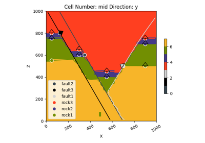

gempy.core.data.StructuralGroup¶
- class gempy.core.data.StructuralGroup(name: str, elements: list[StructuralElement], structural_relation: StackRelationType, fault_relations: list[StructuralGroup] | FaultsRelationSpecialCase | None = None, faults_input_data: FaultsData | None = None)[source]¶
An abstract base class that represents a structural group within a geological model.
Examples using
gempy.core.data.StructuralGroup¶Video Tutorial “code-along”: Faults
Video Tutorial "code-along": Faults
Unknown Model: Importing Borehole Data and Building a 3D Geological Model with GemPy
Unknown Model: Importing Borehole Data and Building a 3D Geological Model with GemPyMethods
__init__(name, elements, structural_relation)append_element(element)get_element_by_name(element_name)remove_element(element)Attributes
Relations with other groups in terms of faults.
faults_input_dataidis_faultis_lithologynumber_of_elementsnumber_of_orientationsnumber_of_pointsSolution related to this group from geological computations.
The name of the structural group.
A list of structural elements within the group.
The type of relation between the structural elements in the group.
- name: str¶
The name of the structural group.
- elements: list[StructuralElement]¶
A list of structural elements within the group.
- structural_relation: StackRelationType¶
The type of relation between the structural elements in the group.
- fault_relations: list[StructuralGroup] | FaultsRelationSpecialCase | None = None¶
Relations with other groups in terms of faults.
- solution: RawArraysSolution | None = None¶
Solution related to this group from geological computations.
- __init__(name: str, elements: list[StructuralElement], structural_relation: StackRelationType, fault_relations: list[StructuralGroup] | FaultsRelationSpecialCase | None = None, faults_input_data: FaultsData | None = None) None¶